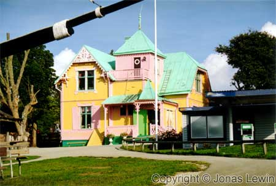

Gotland, Sweden, Kneippbyn, 2001-08
|  |
|
Outside Visby, just a few kilometers, you can find Kneippbyn. It's a place for
children to run around and play. For us Swedes, we can find Villa Villekulla, where Pippi Longstocking is living. The house is the one that was used in the Swedish TV series. I arrived here at 17:00, and the playground closes at 17:00. But it was quite easy to see Villa Villekulla from outside the fence. This sight brought back some nice childhood memories. |